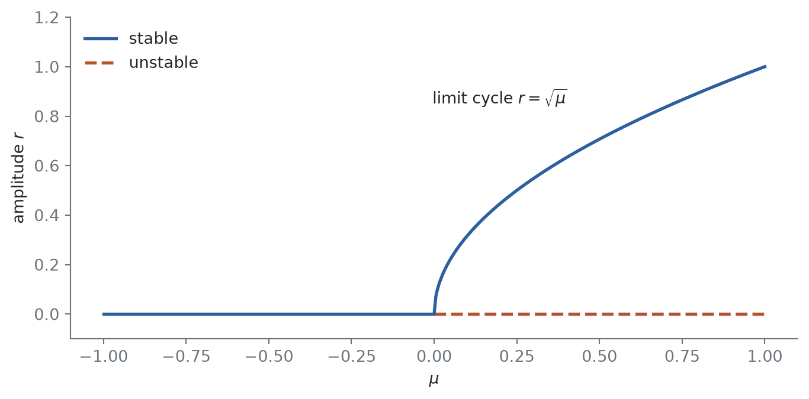
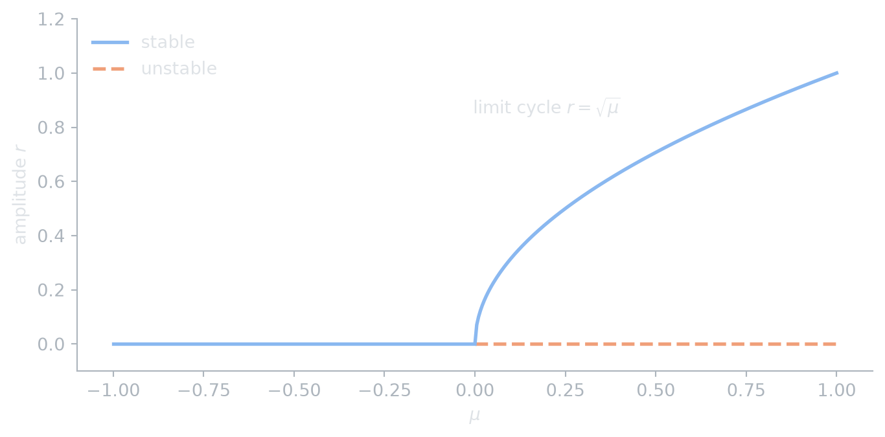
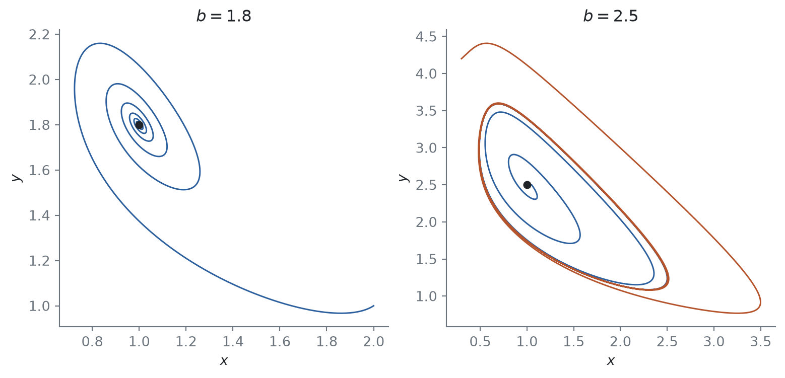
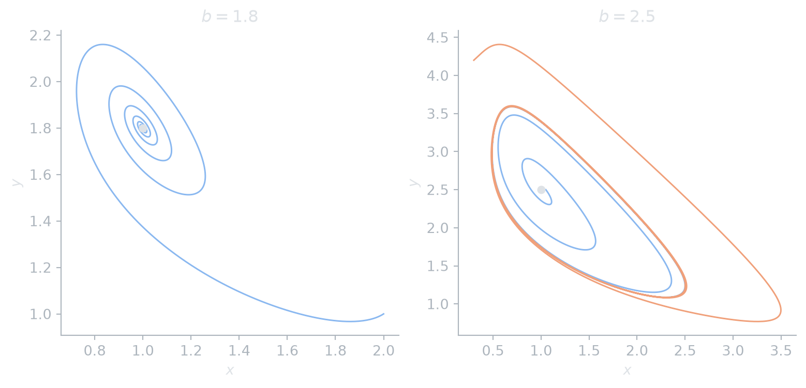

Nam Le
22 August 2026
In the trace–determinant plane, a stable spiral becomes unstable by crossing the line \(\tau = 0\), where a pair of complex eigenvalues passes through the imaginary axis. The linear system has no way to describe what happens next. The nonlinear system typically gains or loses a periodic orbit.
Example 1 In polar coordinates, consider \[ \dot r = \mu r - r^3, \qquad \dot\theta = \omega. \tag{1}\] For \(\mu < 0\), \(\dot r < 0\) for all \(r > 0\), and the origin is a stable spiral. For \(\mu > 0\) the origin is an unstable spiral, and the circle \(r = \sqrt{\mu}\) is a stable limit cycle, since \(\dot r > 0\) inside it and \(\dot r < 0\) outside it.
The cycle is born at zero amplitude and grows like \(\sqrt\mu\) (Figure 1), while its period stays close to \(2\pi/\omega\). Replacing \(-r^3\) by \(+r^3\) gives the subcritical case: an unstable cycle shrinks onto the origin as \(\mu \uparrow 0\), and past the bifurcation trajectories jump away to some distant attractor.
mu_neg, mu_pos = np.linspace(-1, 0, 50), np.linspace(0, 1, 200)
def draw(fig, ax, c):
ax.plot(mu_neg, 0 * mu_neg, color=c.accent, lw=2, label="stable")
ax.plot(mu_pos, 0 * mu_pos, "--", color=c.accent2, lw=2, label="unstable")
ax.plot(mu_pos, np.sqrt(mu_pos), color=c.accent, lw=2)
ax.text(0.2, 0.85, r"limit cycle $r = \sqrt{\mu}$", ha="center")
ax.set(xlabel=r"$\mu$", ylabel=r"amplitude $r$", ylim=(-0.1, 1.2))
ax.legend(loc="upper left")
themed(draw, figsize=(7, 3.4))

Any planar system at such a crossing behaves like Equation 1, provided two nondegeneracy conditions hold.
Theorem 1 (Hopf bifurcation in the plane) Let \(\dot x = f(x, \mu)\) be a smooth family on \(\R^2\) with an equilibrium \(x^*(\mu)\) whose linearization has eigenvalues \(\alpha(\mu) \pm i\beta(\mu)\). Suppose
Then for \(\mu\) near \(0\) on one side of the bifurcation there is a unique periodic orbit near \(x^*\), with amplitude of order \(\sqrt{|\mu|}\) and period close to \(2\pi/\omega\). If \(\ell_1 < 0\) the bifurcation is supercritical and the orbit is stable; if \(\ell_1 > 0\) it is subcritical and the orbit is unstable.
See Guckenheimer and Holmes (1983, sec. 3.4) for the formula for \(\ell_1\) and the proof, which reduces the system to Equation 1 by a near-identity change of coordinates.
Example 2 The Brusselator is a model of an oscillating chemical reaction: \[ \dot x = a - (b + 1)\,x + x^2 y, \qquad \dot y = b\,x - x^2 y, \qquad a, b > 0. \] Its only equilibrium is \((a, b/a)\), with Jacobian \[ J = \begin{pmatrix} b - 1 & a^2 \\ -b & -a^2 \end{pmatrix}, \qquad \tau = b - 1 - a^2, \quad \Delta = a^2 > 0. \] So \(\tau\) changes sign at \(b_c = 1 + a^2\). The eigenvalues there are \(\pm i a\), and \(\partial\tau/\partial b = 1 \neq 0\), so conditions 1 and 2 of Theorem 1 hold with \(\omega = a\).
Figure 2 takes \(a = 1\), so \(b_c = 2\). Below \(b_c\) trajectories spiral into the equilibrium. Above it the equilibrium repels, and trajectories from inside and outside settle onto a stable limit cycle, consistent with a supercritical bifurcation.
a = 1.0
def brusselator(b):
return lambda x: np.array([a - (b + 1) * x[0] + x[0]**2 * x[1], b * x[0] - x[0]**2 * x[1]])
_, below = rk4(brusselator(1.8), [2.0, 1.0], 60, h=0.01)
_, above_in = rk4(brusselator(2.5), [1.05, 2.5], 40, h=0.01)
_, above_out = rk4(brusselator(2.5), [0.3, 4.2], 40, h=0.01)
def draw(fig, axes, c):
for ax, b, paths in ((axes[0], 1.8, [below]), (axes[1], 2.5, [above_in, above_out])):
for p, col in zip(paths, (c.accent, c.accent2)):
ax.plot(p[:, 0], p[:, 1], color=col, lw=1.1)
ax.plot(a, b / a, "o", color=c.fg, ms=5)
ax.set(title=fr"$b = {b}$", xlabel=r"$x$", ylabel=r"$y$")
themed(draw, 1, 2, figsize=(8, 3.8))

@online{le2026,
author = {Le, Nam},
title = {The {Hopf} Bifurcation},
date = {2026-08-22},
url = {https://dynamics.namln.org/posts/2026-08-22-hopf-bifurcation/},
langid = {en}
}
---
title: "The Hopf bifurcation"
description: "How a stable spiral loses stability by shedding a limit cycle of amplitude $\\sqrt{\\mu}$, with the normal form and the Brusselator as a worked example."
date: 2026-08-22
categories: [bifurcations, limit-cycles]
---
```{python}
#| include: false
import sys; sys.path.insert(0, "..")
import numpy as np
from _blog import themed, rk4
```
In the [trace–determinant plane](../2026-08-01-linear-systems-in-the-plane/index.qmd), a stable spiral becomes unstable by crossing the line $\tau = 0$, where a pair of complex eigenvalues passes through the imaginary axis. The linear system has no way to describe what happens next. The nonlinear system typically gains or loses a periodic orbit.
## The normal form
::: {#exm-normal-form}
In polar coordinates, consider
$$
\dot r = \mu r - r^3, \qquad \dot\theta = \omega.
$$ {#eq-normal}
For $\mu < 0$, $\dot r < 0$ for all $r > 0$, and the origin is a stable spiral. For $\mu > 0$ the origin is an unstable spiral, and the circle $r = \sqrt{\mu}$ is a stable limit cycle, since $\dot r > 0$ inside it and $\dot r < 0$ outside it.
:::
The cycle is born at zero amplitude and grows like $\sqrt\mu$ (@fig-diagram), while its period stays close to $2\pi/\omega$. Replacing $-r^3$ by $+r^3$ gives the *subcritical* case: an unstable cycle shrinks onto the origin as $\mu \uparrow 0$, and past the bifurcation trajectories jump away to some distant attractor.
::: {#fig-diagram}
```{python}
#| renderings: [light, dark]
#| fig-alt: "Bifurcation diagram of the normal form: the equilibrium r = 0 is stable for negative mu and unstable for positive mu, and a stable branch r = square root of mu grows from zero."
mu_neg, mu_pos = np.linspace(-1, 0, 50), np.linspace(0, 1, 200)
def draw(fig, ax, c):
ax.plot(mu_neg, 0 * mu_neg, color=c.accent, lw=2, label="stable")
ax.plot(mu_pos, 0 * mu_pos, "--", color=c.accent2, lw=2, label="unstable")
ax.plot(mu_pos, np.sqrt(mu_pos), color=c.accent, lw=2)
ax.text(0.2, 0.85, r"limit cycle $r = \sqrt{\mu}$", ha="center")
ax.set(xlabel=r"$\mu$", ylabel=r"amplitude $r$", ylim=(-0.1, 1.2))
ax.legend(loc="upper left")
themed(draw, figsize=(7, 3.4))
```
Supercritical Hopf bifurcation of @eq-normal.
:::
## The general theorem
Any planar system at such a crossing behaves like @eq-normal, provided two nondegeneracy conditions hold.
::: {#thm-hopf}
## Hopf bifurcation in the plane
Let $\dot x = f(x, \mu)$ be a smooth family on $\R^2$ with an equilibrium $x^*(\mu)$ whose linearization has eigenvalues $\alpha(\mu) \pm i\beta(\mu)$. Suppose
1. $\alpha(0) = 0$ and $\beta(0) = \omega \neq 0$;
2. $\alpha'(0) \neq 0$ (the eigenvalues cross the imaginary axis with nonzero speed);
3. the first Lyapunov coefficient $\ell_1$, computed from the second and third derivatives of $f$ at $(x^*(0), 0)$, is nonzero.
Then for $\mu$ near $0$ on one side of the bifurcation there is a unique periodic orbit near $x^*$, with amplitude of order $\sqrt{|\mu|}$ and period close to $2\pi/\omega$. If $\ell_1 < 0$ the bifurcation is supercritical and the orbit is stable; if $\ell_1 > 0$ it is subcritical and the orbit is unstable.
:::
See @guckenheimer1983 [sec. 3.4] for the formula for $\ell_1$ and the proof, which reduces the system to @eq-normal by a near-identity change of coordinates.
## Example: the Brusselator
::: {#exm-brusselator}
The Brusselator is a model of an oscillating chemical reaction:
$$
\dot x = a - (b + 1)\,x + x^2 y, \qquad \dot y = b\,x - x^2 y, \qquad a, b > 0.
$$
Its only equilibrium is $(a, b/a)$, with Jacobian
$$
J = \begin{pmatrix} b - 1 & a^2 \\ -b & -a^2 \end{pmatrix}, \qquad \tau = b - 1 - a^2, \quad \Delta = a^2 > 0.
$$
So $\tau$ changes sign at $b_c = 1 + a^2$. The eigenvalues there are $\pm i a$, and $\partial\tau/\partial b = 1 \neq 0$, so conditions 1 and 2 of @thm-hopf hold with $\omega = a$.
:::
@fig-brusselator takes $a = 1$, so $b_c = 2$. Below $b_c$ trajectories spiral into the equilibrium. Above it the equilibrium repels, and trajectories from inside and outside settle onto a stable limit cycle, consistent with a supercritical bifurcation.
::: {#fig-brusselator}
```{python}
#| renderings: [light, dark]
#| fig-alt: "Two Brusselator phase portraits. For b = 1.8 a trajectory spirals into the equilibrium. For b = 2.5 trajectories from inside and outside approach a limit cycle."
a = 1.0
def brusselator(b):
return lambda x: np.array([a - (b + 1) * x[0] + x[0]**2 * x[1], b * x[0] - x[0]**2 * x[1]])
_, below = rk4(brusselator(1.8), [2.0, 1.0], 60, h=0.01)
_, above_in = rk4(brusselator(2.5), [1.05, 2.5], 40, h=0.01)
_, above_out = rk4(brusselator(2.5), [0.3, 4.2], 40, h=0.01)
def draw(fig, axes, c):
for ax, b, paths in ((axes[0], 1.8, [below]), (axes[1], 2.5, [above_in, above_out])):
for p, col in zip(paths, (c.accent, c.accent2)):
ax.plot(p[:, 0], p[:, 1], color=col, lw=1.1)
ax.plot(a, b / a, "o", color=c.fg, ms=5)
ax.set(title=fr"$b = {b}$", xlabel=r"$x$", ylabel=r"$y$")
themed(draw, 1, 2, figsize=(8, 3.8))
```
The Brusselator with $a = 1$, on either side of $b_c = 2$. The dot marks the equilibrium $(a, b/a)$.
:::